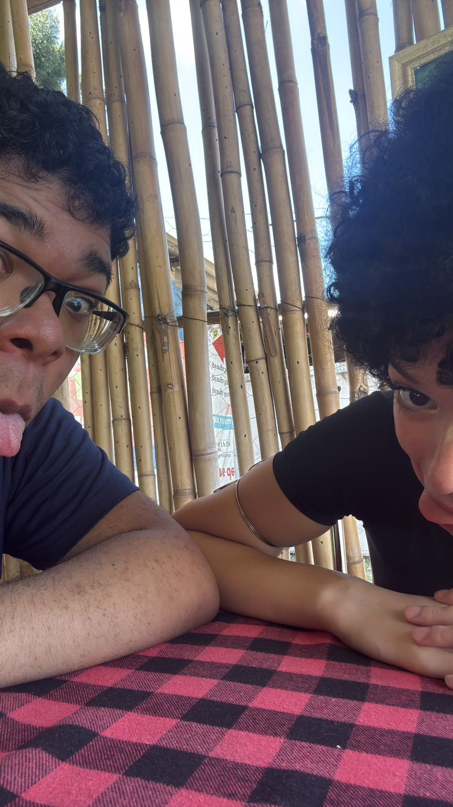
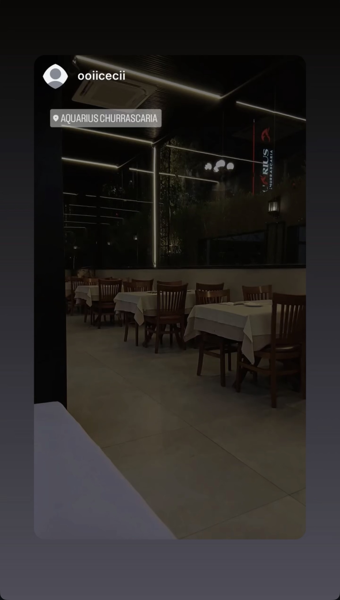
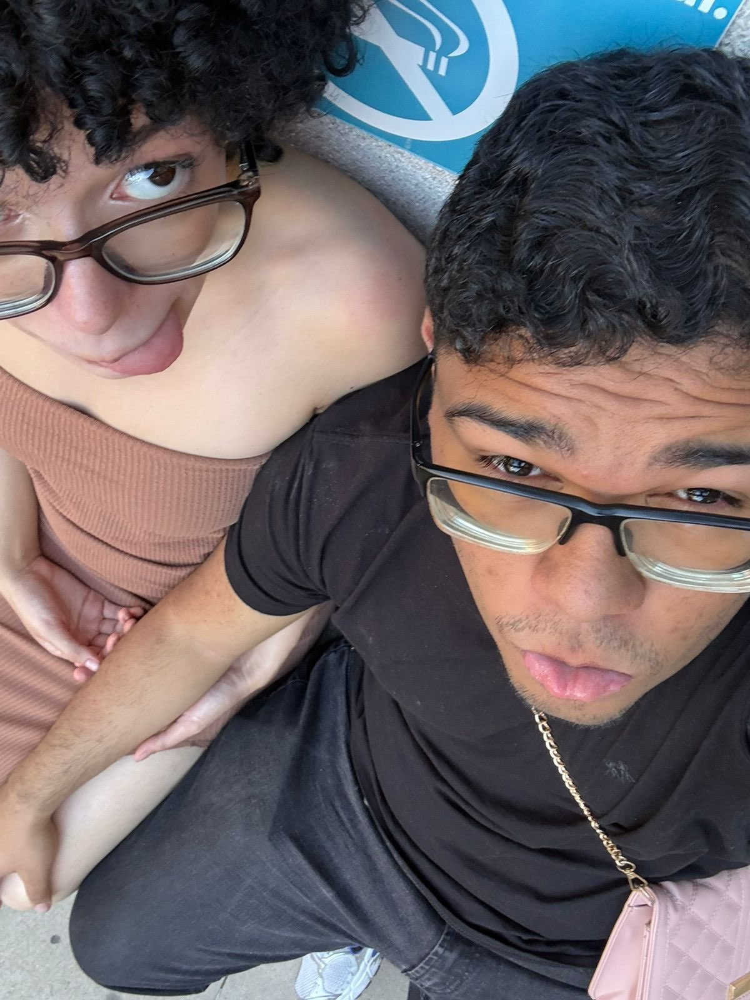
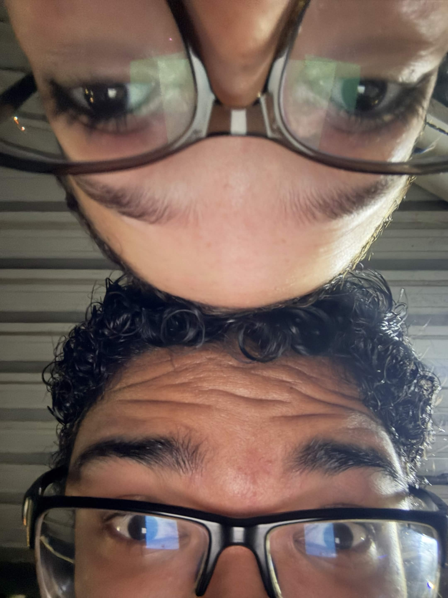

Nossos momentinhos juntos
03 ABRIL 2026
MOMENTO 01
O dia em que nós conhecemos.
📍 Chacára do pastel.

Nesse dia eu estava muito nervoso e muito ansioso, não sabia muito bem como iria ser e tals, mas segui confiante. Tava tremendo bastante quando vi que você estava chegando pois era a primeira vez que iria te ver, até que você chegou não sei muito bem como explicar o que senti na hora mas sabe era como se eu estivesse realizando um sonho, poder estar junto da mulher que já tinha amado no passado. Eu lembro de praticamente tudo nesse dia, o quão seu cabelo estava lindo, seu cheiro, tudo. Eu não preciso falar sobre tudo o que aconteceu nesse dia, até porque ele é inesquecível, jamais irei esquecer do primeiro beijo que você me deu e dá primeira vez que andou de mãos dadas comigo, foi incrível, obrigado por tudo de coração.
07 ABRIL 2026
MOMENTO 02
O dia que a gente pegou chuva e você cabulou aula.
📍 Suzano - Station

Esse dia foi loucura, choveu pra carai parecia um vendaval, molhamos o pé (meu tênis até hoje é sujo por conta disso) mas nós divertimos bastante, apesar de você ter fica muito apreensiva e tensa KKKKKKKKKKKKK. Foi um dia incrível e ajudou muito a gente a nós conectar e entender um pouco mais um sobre o outro, viveria ele novamente se pudesse, que nostalgia boa de uma coisa tão “recente”.
17 ABRIL 2026
MOMENTO 03
Dia que comemos um churras e quase tivemos que lavar um pratos pra pagar.
📍 Aquarius Churrascaria

O dia que quase não aconteceu, tava tarde e tals e o pessoal não queria deixar você ir, mas foi legal pra caramba comemos pra carai e deixamos um rim de gorjeta para eles. Foi engraçdado pelo menos, a gente se divertiu bastante e rimos muito, obrigado por mais essa memória incrivel
19 ABRIL 2026
MOMENTO 4
Dia que fomos para o museu.
📍 Museu do Catavento

Dia do museu, QUASE não acontece tambem, coisa que todos os dias tem em comum KKKKKKKKKK, lembro que tive que ir ai na sua casa perguntar se você podia ir, tu tava muito puta KKKKKKKK, porque tinham atrasados nossos planos, mas no caminho uce foi ficando mais dboa, andamos naquele lugar insalubre chamado Sé, slc dá até arrepio só de lembrar. Mas foi uma experiência legal e obviamente mais um dia que eu nunca vou esquecer momor. AH quase ia esquecendo do Furry que apareceu na estação aquele dia, SINISTRO.
4 MAIO 2026
MOMENTO 5
Dia que a gente meteu o louco e eu dormi ai
📍 Sua casita

Esse dia foi doidera KKKKKKKKK, você veio pra minha casa e tals, ai eu fui te levar pra sua, só que nesse dia a gente pensou "HUMMMMMM PQ NÃO DORMIR AQUI E VC JUNTINHOS" fiquei com o cu na mão não vou negar, mas foi gostosin dormir do seu ladinho, queria poder mais vezes :( sei que no futuro eu vou poder, então o que me resta é esperar. Com certeza esse foi um dos dias mais inesquecíveis da minha vida.
06 MAIO 2026
MOMENTO 6
Dia que a gente meteu o louco e eu dormi ai.
📍 Shopping Metrô Itaquera

Nesse dia aqui era pra ser só um almoço no shopping, mas acabou que a gente decidiu assistir o Michael (rusbê), tudo despretensiosamente, até o esporro que tomamos pro cara da motinha, aquele viado, ta jurado de morte aque em São Mateus. Foi um dia um tanto quando RUSBÊ, fiquei com um hiperfoco no michael de 1 mês KKKKKKKKKKKKKKKKKK. Obrigado por mais essa lembrança amor.
Fim.

Fim só porque eu to com preguiça meisxmo, com certeza tem muitos outros momentos contigo que são memoráveis, não vou lembrar em ordem cronológica certinho, mas o dia que
o cara parou a gente no shopping querendo oferecer uma casa pra gente KKKKKKKKKK, o dia que vc arrumou meu cabelo, ou o dia que a gente fez hamburguer junto, são tantos que eu nem consigo lembrar,
mas pode ter certeza que no meu coração todos estão vivos.
Obrigado por ser minha namorada, companheira, melhor amiga, futuro esposa, tudo que se possa imaginar,
a minha vida tem um antes e um pós você, obrigado por me tirar da tristeza, por mais que as vezes ela volte, obrigado por me fazer feliz, sei que enquanto eu tiver você ao meu lado
eu serei feliz, Graças a Deus e ao destino eu tenho você comigo novamente, mesmo depois de 3/4 anos sem você, e contudo que aconteceu nas nossas vidas nós estamos juntos novamente, e agora
para o resto da vida e alma, porque estamos conectados tanto fisicamente, quanto espiritualmente, e eu sei que nada vai nos separar, porque o destino nos uniu e o destino não erra.
Se tiver esquecido de falar sobre algo me perdoe, mas saiba que eu te amo muito e sempre vou estar ao seu lado, obrigado por cada uma dessas lembranças e momentos que passamos juntos,
seja virtualmente ou presencialmente, eles seram todos guardados no meu coração e na minha memória, e eu sei que você também guarda todos eles, porque você é uma pessoa incrível e maravilhosa, e eu sou muito grato por ter você na minha vida.